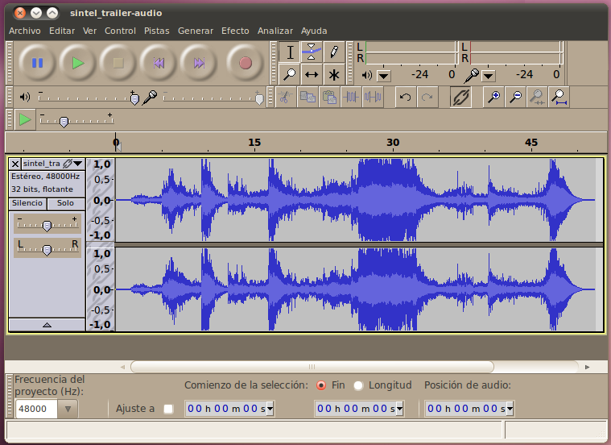
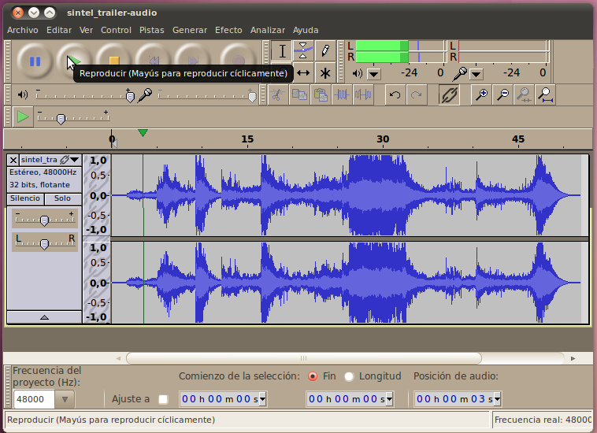
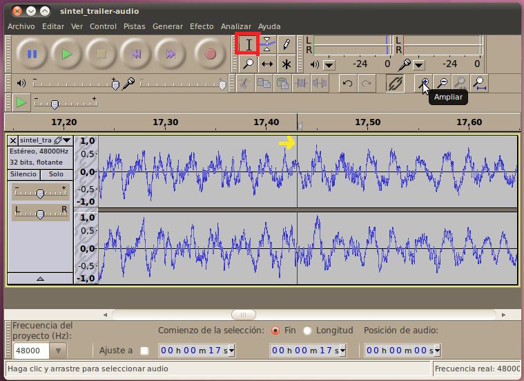
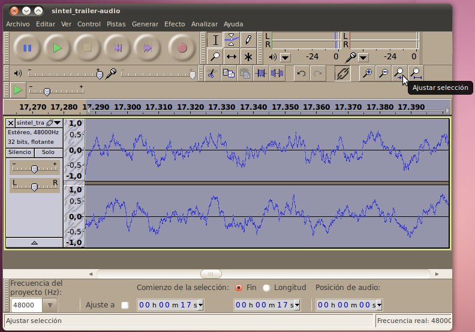
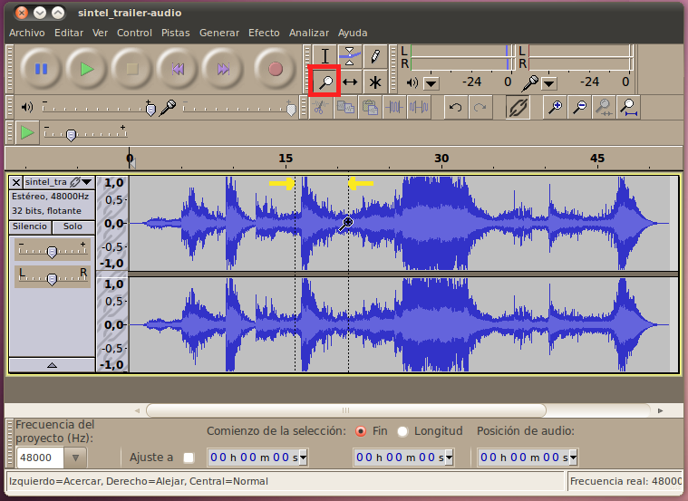
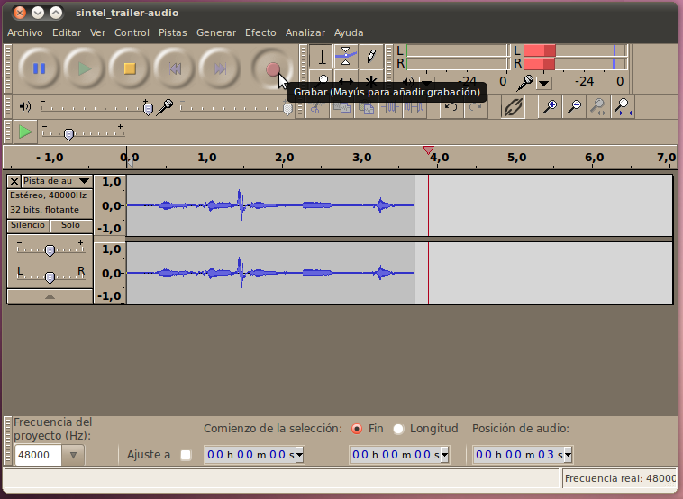

Audacity - Grabación y Reproducción
Audacity es un editor y
grabador de audio de grado profesional. Es relativamente fácil de
comenzar a usar, pero tiene también muchas características complicadas
y muy poderosas disponibles para profesionales.
Importar Audio
Lo primero que necesitas para comenzar a usar
Audacity es algúnn audio. Hay dos maneras de conseguir audio para
Audacity: grabar audio usando un micrófono (veremos esto más adelante),
o importar una pista de audio existente. Por ahora, usaremos la
opción de importar para abrir esta pista de audio FLAC en Audacity.
Una vez hayas grabado el archivo de audio en tu disco duro, abra
Audacity y selecciona Archivo -> Importar -> Audio... y
selecciona el archivo en tu disco duro. Tomaráun segundo para que
Audacity convierta el archivo de FLAC a el formato nativo para edición
(44.1kHz, 32-bit flotante), y luego podrás ver su orma de onda"en la
ventana principal.

Reproducir Audio
Una vez abierto, puedes reproducir el audio
para escuchar cómo suena. Simplemente haz clic en el botón verde de
Reproducir. El botón azúl de Pausa a la izquierda va a suspender la
reproducción. El botón amarillo de Detener va a terminar la
reproducción y devolver el marcador al principio de la pista.

Podrás
ver que el cursor se mueve a lo largo del audio mientras se está
reproduciendo. Justo debajo del botón de reproducir (Play) hay un
deslizador que te permite controlar el volumen de la reproducción. En
la misma línea del botón de Reproducir, pero más hacia la derecha
podrás ver dos barras verdes (etiquetadas con las letras L y R para los
canales "Left" (Izquierda) y "Right" (derecha). Estas barras muestran
el nivel de volumen que se está reproduciendo en ese precisio instante.
Herramienta de Acercamiento (Zoom)
Si quieres entender mejor la
parte exacta de la forma de onda con la que estás trabajando (esto será
muy importante cuando vayas a editar música), necesitarás la habilidad
de acercarte a prociones pequeñas de la pista. Hay varias maneras de
hacer esto en Audacity. La primera es en el modo de selección (cuando
el cursor de selección está activo, a la derecha del botón de grabar).
Para hacer zoom en el modo de selección, haz clic en la pista en el
lugar al cual quieres acercarte (el clic pondrá una línea vertical en
ese punto), y luego haz clic en la lupa con el signo de adición (+)
hasta que estés lo suficientemente cera.

Si
quieres, puedes mover la línea vertical antes de seguir acercándote
(para seleccionar exactamente el lugar al que te quieres acercar), o
puedes retraer el zoom para alejarte (usando el botón a la derecha del
botón anterior, esta vez el que tiene el signo de resta "-"), luego
mover la línea y seguir acercándote.
A veces vas a tener una sección en particular que va a ser
importante, y vas a querer hacer zoom hasta el punto en el que esa
selección ocupe toda la pantalla. Puede que necesites varios
intentos para hacer esto manualmente -- pero hay una manera más facil.
Para empezar podemos usar la herramienta de selección para hacer una
selección sobre el área deseada. Para esto, haz clic en el punto donde
comienza esta área y arrastra el curso hasta el final de la sección.
Mientras el cursor se mueve, e área que estés seleccionando se tornará
gris oscuro, indicando que está seleccionada.

Una
vez hayas seleccionado correctamente el área, simplemente haz clic en
el botón de "Ajustar selección", el cual está inmediatamente a la
derecha de los botones de zoom.

Verás
que ahora tu selección ocupa todo el espacio de la pantalla. Si más
tarde quieres regresar a ver el proyecto entro a la vez, puedes hacer
clic en el botón de "Ajustar Proyecto", inmediatamente a la derecha del
botón de Ajustar Selección.
La otra manera de hacer zooms es usando la herramienta de zoom.
Puedes entrar en el Modo de Zoom haciendo clic en el botón de la lupa
que está justo debajo del botón del cursor que ejecuta el Modo de
Selección (justo a la derecha del botón de grabar). En este modo,
puedes hacer zoom con simplemente hacer clic en un punto al que quieras
acercarte, y retraer el zoom usando el botón izquierdo. Para hacer zoom
en una selección entera, haz clic derecho y arrastra el cursor a través
de la sección; veras líneas entrecortadas desde el comienzo hasta el
final de la selección. A diferencia del Modo de Selección, esto no
creará un área gris oscura, sino que hará zoom a esta área
automáticamente.

Record audio
The other way to get audio into audacity is to record it. First,
lets remove the track we imported previously. Just click the "X"
in the upper left corner of the track's window. Now you should
have a blank audacity window to record into. When you are ready,
push the record button then start talking into your microphone.

This time you will see the cursor be a bit ahead of the graph showing
the waveform. That is because it takes the computer a short
amount of time to process the audio it is recording and display
it. Be aware that the location of the cursor is where you are at
in the timeline, not where the graph of the waveform is showing
up.
You will also notice that there are two bars (red this time) to the
right of where the volume was displayed during playback. This
shows the level of volume of the audio being recorded at that
instant.
Finally, there is a slider under the record button that allows you to
change the strength that the microphone records at. Unfortunately
if you are running Ubuntu, this won't work. Instead, set this in
the operating system's (not Audacity) Sound Preferences on the Input tab.
Save AUP (AUdacity Project) File
Now that we have the start of an audio project we will want to work
with, we need to save the project so we can open it later. To
save the entire project, go to File -> Save Project As... When
you pick a file name with the .aup extension, audacity will
automatically create a directory (aka folder) at the same location as the .aup file,
with the same name as what is before the .aup. This directory
contains the actual audio data so it is very important.
Do not delete this while trying to cleanup a directory. If you
move the .aup file to a different location, you need to move this
directory as well.
Export Audio Files
At this point we could go on editing our project, adding more audio,
etc. During this process we would be continuously saving the .aup file
(in case our computer crashes). In the end though, we want
to get our final result back out in a format that we can listen to
(WAV, FLAC, OGG-Vorbis, MP3, etc). Unfortunately, AUP files are not
something that you can listen to in a media player, they are a special
audacity format (similar to XCF files for the GIMP). To create
the more normal file types, we will use the "Export" function. Go
to File -> Export and select the type of file you would like from
the drop down on the bottom (FLAC is the recommended format), then
enter a file name and click "Save".